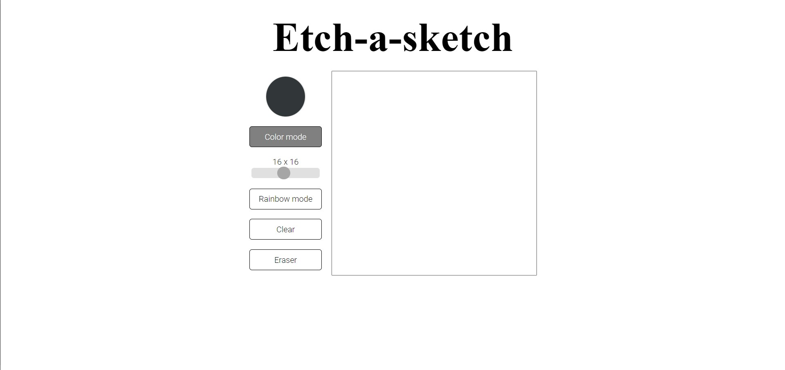
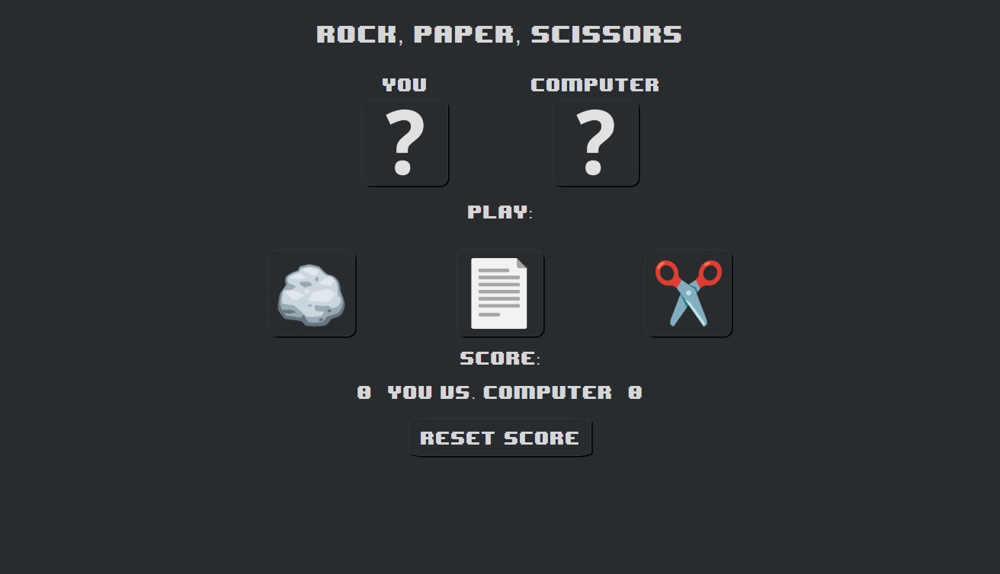
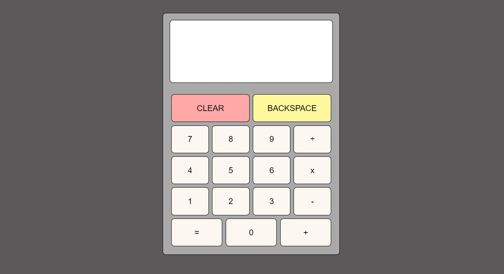

I am a student fascinated by technology's ability to improve the way we live, and always eager to learn new things. I enjoy working in teams and collaborating with other IT professionals to develop innovative and efficient solutions. My objective is to grow professionally in the IT field and create technology that has a positive impact on the world.
In addition to my interest in photography and videography, I enjoy practicing calisthenics, playing chess, reading or riding the bike.
Projects



During TheOdinProject course, I had the opportunity to work on an Etch-a-Sketch project,
which involved creating an interactive application that allowed the user to create drawings on the screen using the mouse.
I used HTML, CSS, and JavaScript to develop the application, and learned a lot about the interaction between these technologies in the
web development process. I used CSS to create the graphical interface of the application.
I used JavaScript to define the programming logic of the application, as well as to create functions that allowed users
to change the color of the drawing pen, make it random, change the size of the board or erase the drawings created. In the project, I took an
iterative approach and performed tests to ensure the quality of the code and functionalities. By successfully completing this project, I
gained more experience in developing interactive web application and improved my programming skills

I worked on a Rock-Paper-Scissors project,
which involved creating a simple and interactive game that allowed users to play against the computer.
To develop the application, I used HTML, CSS, and JavaScript, and I learned a lot about working with DOM elements and
programming in JavaScript. CSS was used to create the game's graphical interface, as well as to define the appearance and
style of the selection buttons. JavaScript was used to define the game's programming logic, such as randomly choosing the computer's moves,
comparing the user's and computer's moves, and displaying the final result. I also implemented a scoring system to track the game's score
during gameplay.

This calculator app is a user-friendly tool that allows users to perform basic mathematical calculations.
The app features a clean and simple interface with a display screen that shows the numbers and calculations entered by the user.
It includes all of the basic mathematical functions such as addition, subtraction, multiplication and division. The app is also equipped with a
clear button, which allows the user to clear the calculator's display screen and start fresh with a new calculation.